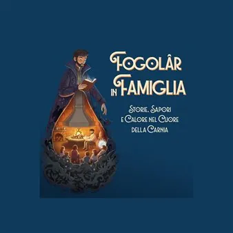

da sab 5 dic a ven 5 feb · dalle 17:00
Fogolâr in Famiglia – Storie, Sapori e Calore nel Cuore della Carnia.
Fogolâr in Famiglia – Storie, Sapori e Calore nel Cuore della Carnia Cinque appuntamenti per vivere la tradizione del fogolâr, l'antico focolare friulano simbolo di accoglienza, comunità e condivisione. Tra dicembre e febbraio, alcuni locali e strutture della Carnia apriranno le…
 Indicazioni
Indicazioni
- Costi e prenotazioni
- Costo non indicato · Prenotazione non indicata
- Programma
- Programma da verificare. Apri la fonte ufficiale per orari e possibili aggiornamenti.
- In caso di maltempo
- Nessuna indicazione specifica pubblicata.
- Note
- Acquisito automaticamente dalla fonte.
L’EVENTO
Descrizione completa
Cinque appuntamenti per vivere la tradizione del fogolâr , l'antico focolare friulano simbolo di accoglienza, comunità e condivisione. Tra dicembre e febbraio, alcuni locali e strutture della Carnia apriranno le loro porte per ospitare pomeriggi dedicati alle famiglie, tra racconti, leggende e atmosfere che richiamano le tradizioni della montagna friulana.
Protagonista degli incontri sarà il contastorie Fabio Scaramucci , che accompagnerà bambini e adulti in un viaggio tra fiabe, racconti popolari e leggende della tradizione friulana. Ogni evento si svolgerà attorno al fogolâr, in ambienti accoglienti e suggestivi che custodiscono ancora oggi il valore dell'ospitalità e dello stare insieme.
L'iniziativa è pensata per famiglie e bambini dai 5 anni in su e rappresenta un'occasione speciale per trascorrere del tempo di qualità insieme, scoprendo alcuni dei luoghi più autentici della Carnia.
Calendario:
Sabato 5 dicembre – ore 18.00
Agriturismo Naunal , Sutrio
Martedì 22 dicembre – ore 17.00
Comune Rustico , Arta Terme
Venerdì 8 gennaio – ore 17.00
Hotel Bellavista , Ravascletto
Venerdì 15 gennaio – ore 17.00
Albergo Galles , Paluzza
Venerdì 5 febbraio – ore 17.00
Pizzeria Al Fogolar , Paularo
Per informazioni e prenotazioni
Ortoteatro
Tel. 320 0530007
Per informazioni
InfoPoint PromoTurismoFVG Tolmezzo
Palazzo Lo Basso
Piazza XX Settembre, 7
33028 Tolmezzo (UD)
Tel. +39 0433 44898
Cell. +39 335 7747958
info.tolmezzo@promoturismo.fvg.it
IL PROGRAMMA
Programma e orari
Appuntamenti raccolti dalle fonti elencate. Dove manca un orario, non è ancora disponibile in questa scheda.
Programma pubblicato
- Dal 2026-12-05 al 2027-02-05
INFORMAZIONI UTILI
Prima di partire
- Controllare la fonte prima di partire.
ORGANIZZAZIONE